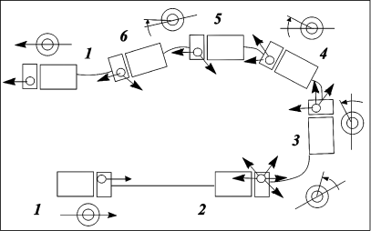
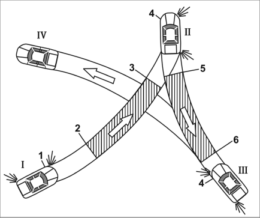
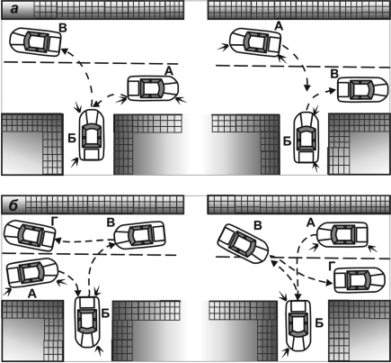

Развороты.
Разворот является очень ответственным и опасным маневром. Главное – выбрать безопасный момент и место для разворота, когда никто не обгоняет вас слева и дорога хорошо видна в обоих направлениях. При развороте на неограниченном участке без применения заднего хода следует действовать следующим образом (рис. 11): выбрать место для поворота и остановиться (рис. 11.1, 11.2); определить возможность разворота; посмотреть в зеркало заднего вида; включить указатель левого поворота и низшую передачу; еще раз посмотреть в зеркало; после трогания автомобиля с места (рис. 11.2) быстро перехватом повернуть рулевое колесо до упора (рис. 11.3); подъехать к середине участка, выбранного для выполнения поворота (рис. 11.4), оценить дорожную ситуацию и завершить поворот (рис. 11.5); посмотреть в зеркало заднего вида; выключить указатель поворотов и выровнять автомобиль параллельно обочине (рис. 11.6, 11.7).

Рис. 11. Разворот на неограниченном пространстве

Рис. 12. Разворот с применением заднего хода
Разворот нужно выполнять быстро; прежде всего выполняют поворот предельно малого радиуса, чтобы затратить меньше времени на маневрирование и завершить его по возможности без заднего хода. За городом можно использовать обочину, а также свободное пространство по сторонам проезжей части.
Разворот с применением заднего хода совершают на дорогах и улицах небольшой ширины (рис. 12). Его особенность состоит в том, что в положении 3, не доезжая около 2 м до бордюра, на малой скорости необходимо повернуть руль максимально в обратную сторону, как бы подготавливая автомобиль к последующему повороту задним ходом. Если этого не сделать, затратится больше движений вперед-назад, а поворот колес на месте вызывает повышенный износ рулевого механизма и шин.

Рис. 13. Разворот с применением заднего хода на городских дорогах: а – правильно; б – неправильно; А, Б, В, Г – последовательность разворота
При узком проезде разворот выполняют в несколько приемов, иногда поворачивая сразу влево, затем произвольно назад и так 2–3 раза, пока автомобиль не выйдет на дорогу в обратом направлении. Такой разворот задерживает движение и мешает другим водителям, поэтому вместо этого следует довести автомобиль до отказа вправо (до края дороги), а затем с наименьшим радиусом поворота – влево.
Чтобы ускорить разворот в городских узких проездах, используют арки, ворота, различные расширения дороги, куда автомобиль подается задним ходом и выезжает в нужном направлении (рис. 13). При полной безопасности маневра можно совершать разворот с ходу, минуя промежуточные остановки.